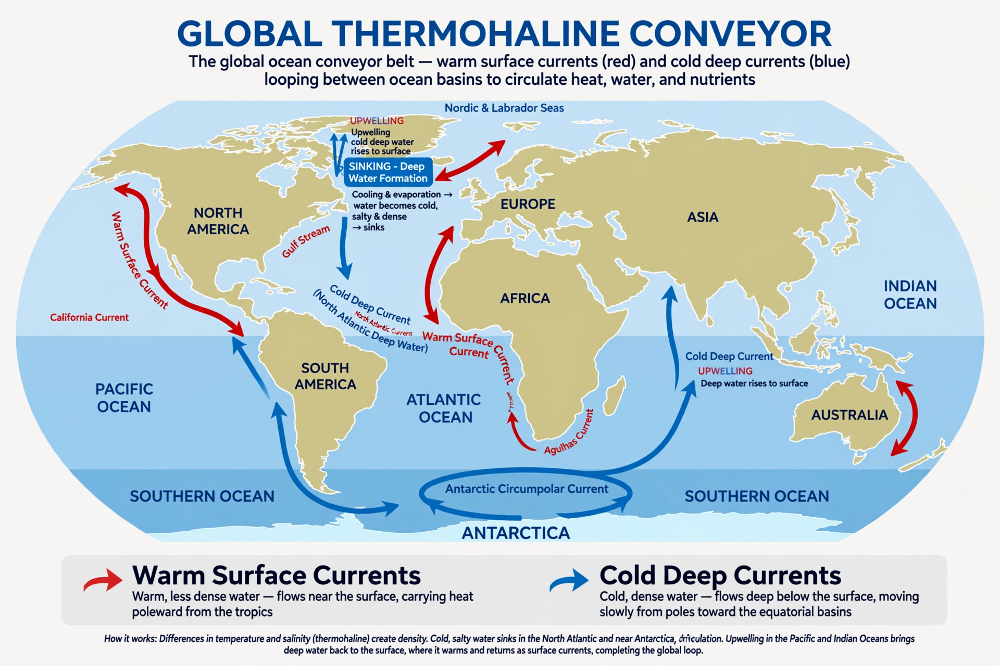

Thermohaline circulation

The thermohaline circulation is the global system of ocean currents driven by differences in water density, which is controlled by temperature (thermo-) and salinity (-haline). It links all the world's ocean basins into a slow 'conveyor' that redistributes heat, carbon and nutrients and ventilates the deep ocean.
The Atlantic limb of this circulation, where warm surface water flows north, cools, sinks and returns southward at depth, is known as the Atlantic Meridional Overturning Circulation (AMOC).
How it works
In the far North Atlantic and around Antarctica, surface water becomes dense enough to sink: in the north because it cools (and releases heat to the air), around Antarctica because sea-ice formation leaves the remaining water saltier. This deep water spreads through the abyss of the Atlantic, Indian and Pacific oceans, mixing slowly upward over centuries before returning to the surface, mainly in the Southern Ocean and North Pacific.
A parcel of deep water may take on the order of a thousand years to complete the circuit. Along the way the circulation stores carbon in the deep sea and carries oxygen to depth, shaping conditions for deep ecosystems.
Stability and climate change
Because sinking depends on a delicate balance of temperature and salinity, the circulation can weaken or reorganise when large amounts of fresh water enter the North Atlantic, as happened in past climates, abruptly cooling the region. Several lines of evidence suggest the AMOC has weakened since the mid-20th century, and the IPCC projects further weakening this century under Climate change, though a full collapse before 2100 is considered unlikely in most assessments.
A substantially weaker AMOC would cool the North Atlantic region relative to the global trend, shift tropical rainfall belts southward, raise sea level along parts of the North American coast and alter marine ecosystems.
See also: Ocean current · Gulf Stream · Ocean · Climate change · Agulhas Current